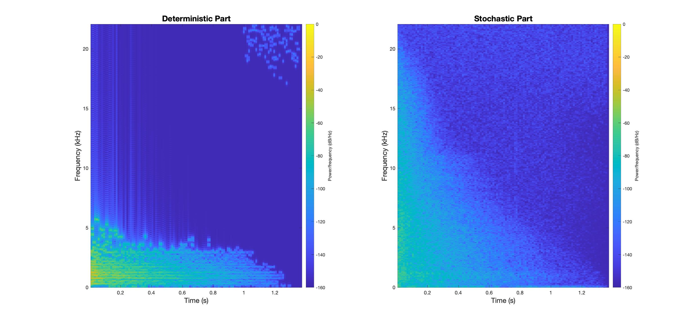

SYSTEM EXAMPLES
To demonstrate the system’s capabilities, four acoustics samples consisting of different timbral qualities will be transformed and comparatively analysed. Each should provide you with various examples of audio based effects that can be achieved via the system. The samples will first be theorised and validated to the system’s output before being transformed by the user parameters.
1. TUNED WIND INSTRUMENT
For a flute sample, we would expect the system to be able to sufficiently separate both tonal and acoustic noise elements. The fundamental frequencies should be the most prominent in the deterministic part with each timbral harmonic above decaying in amplitude, while the stochastic part should be largely active as the flute is excited by the movement of air.
Figure 13: Spectral Parts of a Flute.
As expected, we can locate the fundamentals of each note within the deterministic signal while observing the rising harmonic overtones. The chaotic high frequency sinusoids within the deterministic spectrum can be regarded as anomalies as result of the system’s performance. Meanwhile, the stochastic part demonstrates the timbral breathiness of the flute with the onset and offset of each note being clearly defined in the spectrogram. To transform the sample, the pitch transposing is set to 12 while the resonance balance is set to 97%. This should double each sinusoidal frequency and decrease the magnitude of the stochastic part.
Figure 14: Comparison of Original and Resynthesised Flute Sample.
Visually, our output is exactly as theorised and thus validates our system’s behaviour. Aurally, the sound produced sounds distinctively more resonant and thin, however this is likely due to the reduced low-mid range from the stochastic part and the transposition of deterministic fundamentals.
2. PERCUSSIVE HIT
For a percussive snare hit we would expect much more stochastic information, similar to that of an impulse response, and very little resonance apart from any slight acoustic tuning.
Figure 15: Spectral Parts of a Snare Hit.
We could adjust the tuning of the snare hit, however for this example we will instead remove all tuning by setting the resonance balance to 0%. Here, we will compare the original audio spectrogram to the resynthesised system output to show the overall effect to the timbral domain output.
Figure 16: Comparison of Original and Resynthesised Snare Hit.
Although the spectrums appear to be nearly identical, the resynthesised audio resembles more of a clap than the original snare. This is due to any oscillations caused by an acoustic skin membrane being removed completely, leaving only the impulse decay. These oscillations can be found in the original audio spectrum as subtle parallel horizontal lines near the bottom of the frequency axis.
3. TUNED PLUCKED INSTRUMENT
For a tuned plucked instrument such as a lute, we can expect somewhat of a mixture between our tuned instrument and percussive hit analysis.
Figure 17: Spectral Parts of a Lute.
Once again, we can clearly see the note onsets within the stochastic part due to the displacement excitation caused by each pluck. This is accompanied by the many harmonics found in the deterministic part from the timbral vibrations of the string and instrument body. We can accentuate the plucking acoustics of the audio by transposing up and adjusting the resonance balance.
Figure 18: Comparison of Original and Resynthesised Lute Sample.
The sinusoidal content is transposed up by 19 semitones with the resonance balance set to 5%, creating a much sharper pluck effect from the much higher frequency register.
4. HUMAN SINGING VOICE
For an operatic female vocal sample, we would expect very similar results to a tuned wind instrument as both are excited by the movement of air.
Figure 19: Spectral Parts of Vocal Sample.
Along with the fundamental and harmonic elements, we can also visually see some tonal dynamics and vocal articulation. Using the system, we could try transforming the female singer voice to sound more like a male singer. We can roughly achieve this by pitching the deterministic part down two whole tones and decreasing the resonance to sound more gruff. This would increase the magnitude of the stochastic part while lowering the singer’s average fundamental.

Figure 20: Comparison of Original and Resynthesised Vocal Sample.
Comparing the original to the transformed, the formants don’t completely match or sound too realistic, however the resynthesised audio does resemble a much deeper and huskier voice.